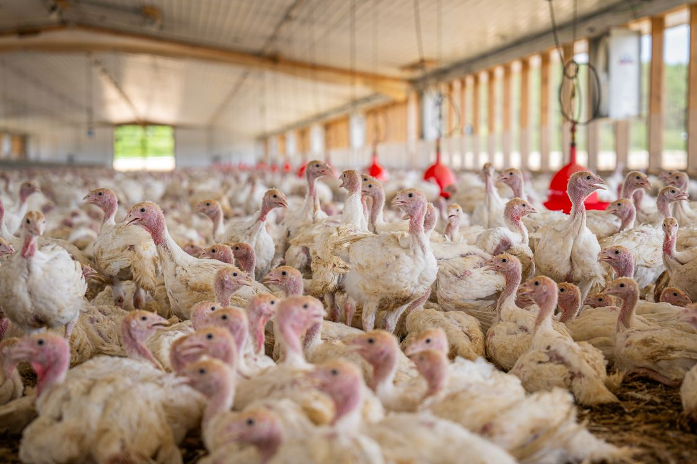

Enzymes for poultry feed
Poultry diets bring starch, protein and non-starch-polysaccharide components together. The starting point is the ingredient mix and the nutritional question for the bird type and stage. Enzyme functions can then be considered in that context.
Explore the application
Start with the ingredient challenge
Existing application material describes corn and mixed-meal diets. The balance of ingredients shapes the substrate targets and the reason for choosing a blend.
Corn and mixed-meal diets
Starch, protein and non-starch-polysaccharide components
Follow the diet through to the outcome
Feed intake, body-weight gain, feed conversion and egg-production measures represent different production questions. Select the measures for the bird type and stage; a general enzyme claim does not replace that distinction.
- Feed intake
- Body-weight gain
- Feed conversion
- Egg-production measures
Keep formulation changes visible
When ingredients or nutrient specifications change alongside enzyme addition, the comparison needs to make those changes clear. This helps nutrition teams interpret the contribution of the proposed programme.
Define the question and reference treatment
Define the poultry type, production stage, principal ingredients and intended comparison with the nutrition team. Keep any change in formulation visible alongside the proposed enzyme application.
Discuss your poultry-feed application
Include poultry type and stage, diet ingredients, the formulation change and the production measure you want to examine.
Current implementation notes
Confirmed inputs in use: company identity and contacts, supplied product materials and the agreed application scope.
Implementation: production domain, enquiry delivery and actual data-processing configuration remain part of the launch work. Forms in this preview do not submit.
Media: concept scenes and packaging positions are layout aids; company media replaces them at the final asset stage.